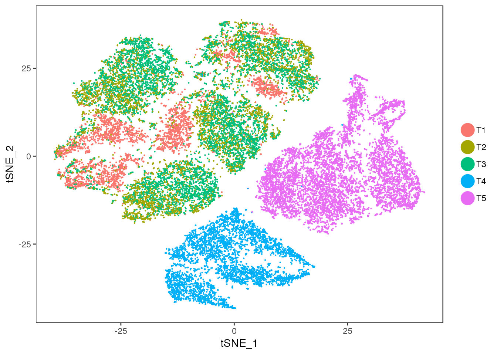
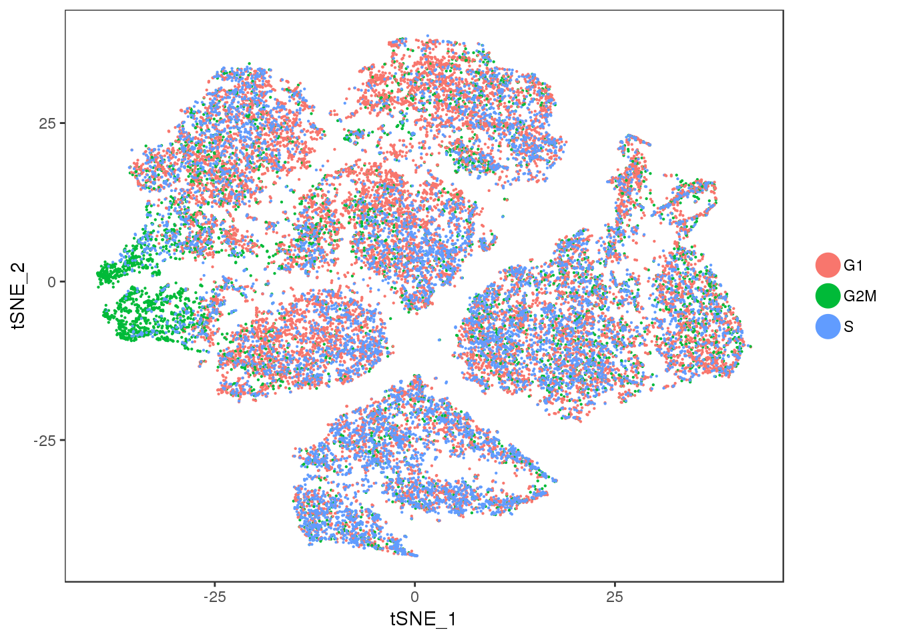
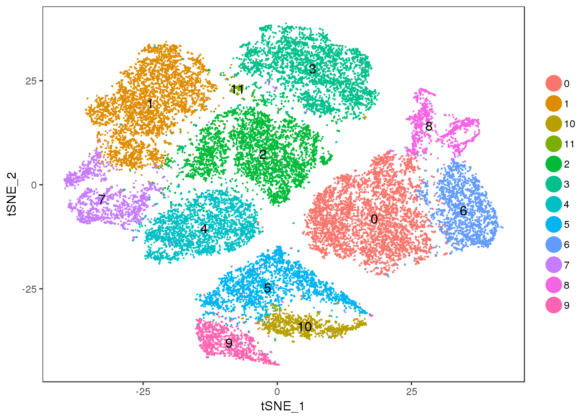
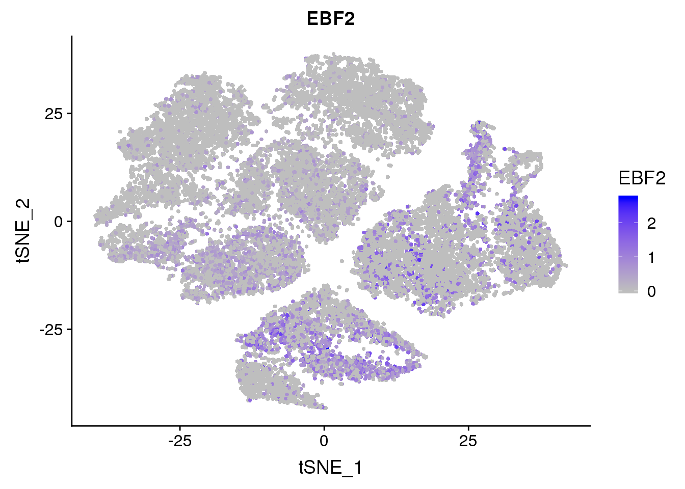
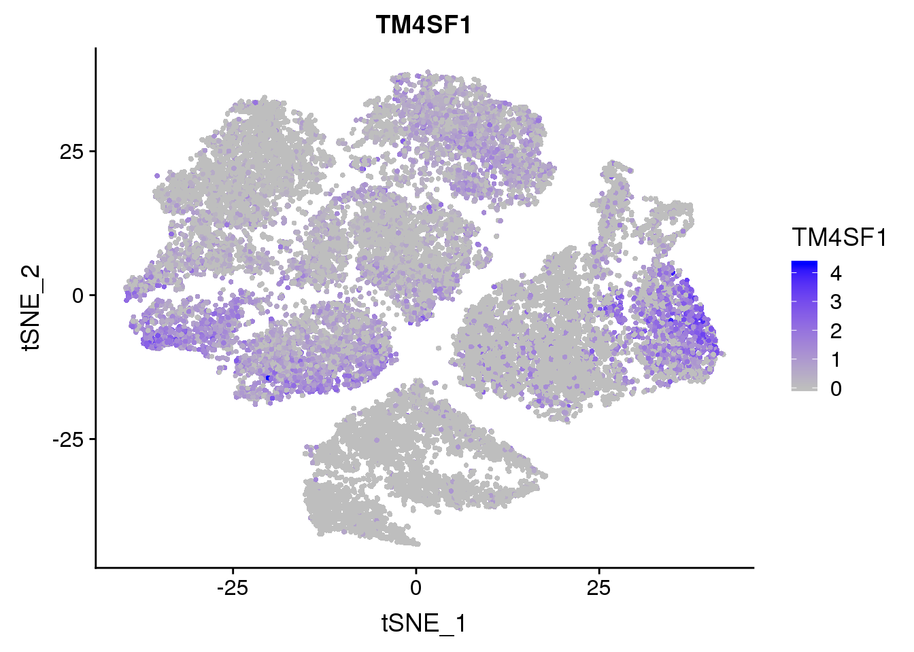
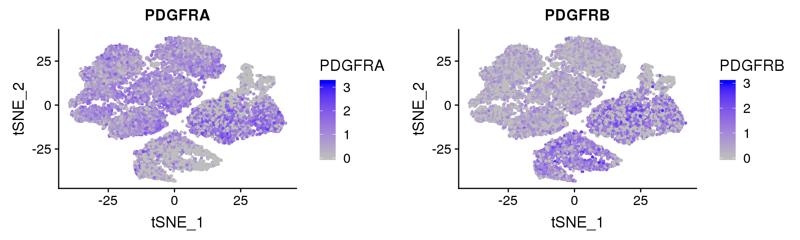

R Notebook
Last updated: 2018-11-11
workflowr checks: (Click a bullet for more information)-
✔ R Markdown file: up-to-date
Great! Since the R Markdown file has been committed to the Git repository, you know the exact version of the code that produced these results.
-
✔ Environment: empty
Great job! The global environment was empty. Objects defined in the global environment can affect the analysis in your R Markdown file in unknown ways. For reproduciblity it’s best to always run the code in an empty environment.
-
✔ Seed:
set.seed(20181026)The command
set.seed(20181026)was run prior to running the code in the R Markdown file. Setting a seed ensures that any results that rely on randomness, e.g. subsampling or permutations, are reproducible. -
✔ Session information: recorded
Great job! Recording the operating system, R version, and package versions is critical for reproducibility.
-
Great! You are using Git for version control. Tracking code development and connecting the code version to the results is critical for reproducibility. The version displayed above was the version of the Git repository at the time these results were generated.✔ Repository version: dc4a8ca
Note that you need to be careful to ensure that all relevant files for the analysis have been committed to Git prior to generating the results (you can usewflow_publishorwflow_git_commit). workflowr only checks the R Markdown file, but you know if there are other scripts or data files that it depends on. Below is the status of the Git repository when the results were generated:
Note that any generated files, e.g. HTML, png, CSS, etc., are not included in this status report because it is ok for generated content to have uncommitted changes.Ignored files: Ignored: output/monocle/ Untracked files: Untracked: files/171219-van_den_Brink2017-genes_affected_by_dissociation.csv Unstaged changes: Modified: code/10x-180831-config.R Modified: code/preprocess-data.R
Expand here to see past versions:
| File | Version | Author | Date | Message |
|---|---|---|---|---|
| Rmd | dc4a8ca | PytrikFolkertsma | 2018-11-11 | wflow_publish(c(“analysis/10x-180831-general-analysis.Rmd”)) |
This is an R Markdown Notebook. When you execute code within the notebook, the results appear beneath the code.
Try executing this chunk by clicking the Run button within the chunk or by placing your cursor inside it and pressing Cmd+Shift+Enter.
library(Seurat)Loading required package: ggplot2Loading required package: cowplot
Attaching package: 'cowplot'The following object is masked from 'package:ggplot2':
ggsaveLoading required package: Matrixlibrary(dplyr)
Attaching package: 'dplyr'The following objects are masked from 'package:stats':
filter, lagThe following objects are masked from 'package:base':
intersect, setdiff, setequal, unionseurobj <- readRDS('output/10x-180831')Quality control plots
For now the data was only filtered on 0.1 percent.mito. The subcluster from T1 with low UMI and gene counts was removed.
VlnPlot(seurobj, c("nGene", "percent.mito", "nUMI"), group.by='timepoint', nCol = 1, point.size.use=-1, size.x.use = 10)GenePlot(seurobj, 'nUMI', 'nGene', cex.use = 0.5)PCElbowPlot(seurobj, num.pc=50) #TSNE+clustering run on 21 PC's.PCA
Interesting to see: T4 and T5 contain a lot more variation than T1, T2 and T3, and PC2 seems to split T4 and T5. Could the split in PC2 describe the cells developing into white or brown?
PCAPlot(seurobj, group.by='timepoint', pt.size=0.1)A few clusters in the data have much higher expression of ‘ADIPOQ’, ‘SCD’, ‘RBP4’, ‘G0S2’, ‘PLIN4’, ‘FABP5’. This seems to be captured by PC2.
FeaturePlot(seurobj, reduction.use='pca', features.plot=c('ADIPOQ', 'SCD', 'RBP4', 'G0S2', 'PLIN4', 'FABP5'), pt.size=1, cols.use=c('gray', 'blue'), no.legend=F, nCol=2)FeaturePlot(seurobj, reduction.use='pca', features.plot=c('PLA2G2A', 'MT1X', 'APOD', 'DPT', 'PTGDS', 'IGF2'), pt.size=1, cols.use=c('gray', 'blue'), no.legend=F, nCol=2)PLA2G2A: http://www.jlr.org/content/early/2017/06/29/jlr.M076141 “…suggesting that PLA2G2A activates mitochondrial uncoupling in brown adipose tissue.”
PDGFRα/PDGFRβ signaling balance modulates progenitor cell differentiation into white and beige adipocytes. Based on PDGFRα or PDGFRβ deletion and ectopic expression experiments, we conclude that the PDGFRα/PDGFRβ signaling balance determines progenitor commitment to beige (PDGFRα) or white (PDGFRβ) adipogenesis. Our study suggests that adipocyte lineage specification and metabolism can be modulated through PDGFR signaling. http://dev.biologists.org/content/145/1/dev155861.long
FeaturePlot(seurobj, reduction.use='pca', features.plot=c('PDGFRA', 'PDGFRB'), pt.size=1, cols.use=c('gray', 'blue'), no.legend=F, nCol=2)TSNE
TSNEPlot(seurobj, group.by='timepoint', pt.size=0.1)
TSNEPlot(seurobj, group.by='Phase', pt.size=0.1)
Cluster 11 = mixture cluster.
TSNEPlot(seurobj, group.by='res.0.5', pt.size=0.1, do.label=T)
VlnPlot(seurobj, group.by='res.0.5', features.plot=c('MALAT1', 'NEAT1'), point.size.use=-1)Metadata feature plots
FeaturePlot(seurobj, reduction.use='tsne', features.plot = 'nUMI', cols.use=c('grey', 'blue'), no.legend=F)
FeaturePlot(seurobj, features.plot = 'percent.mito', cols.use=c('grey', 'blue'), no.legend = F)FeaturePlot(seurobj, reduction.use='tsne', features.plot = 'nGene', cols.use=c('grey', 'blue'), no.legend = F)Markergene expression
FeaturePlot(seurobj, reduction.use='tsne', features.plot = 'EBF2', cols.use=c('grey', 'blue'), no.legend = F)
FeaturePlot(seurobj, reduction.use='tsne', features.plot = 'TM4SF1', cols.use=c('grey', 'blue'), no.legend = F)
FeaturePlot(seurobj, reduction.use='tsne', features.plot = 'LY6K', cols.use=c('grey', 'blue'), no.legend = F)FeaturePlot(seurobj, reduction.use='tsne', features.plot = 'PDGFRA', cols.use=c('grey', 'blue'), no.legend = F)Markers literature
Marker genes for mature brown/beige compared to white mentioned by Seale 2016: UCP1, DIO2, CIDEA, PPARGC1A, PPARA, COX7A1, COX8B, PRDM16, EBF2. \
VlnPlot(seurobj, features.plot=c('UCP1', 'DIO2', 'CIDEA', 'PPARGC1A', 'PPARA', 'COX7A1', 'PRDM16', 'EBF2'), group.by='timepoint', point.size.use = -1, nCol=2)Based on PDGFRα or PDGFRβ deletion and ectopic expression experiments, we conclude that the PDGFRα/PDGFRβ signaling balance determines progenitor commitment to beige (PDGFRα) or white (PDGFRβ) adipogenesis. Our study suggests that adipocyte lineage specification and metabolism can be modulated through PDGFR signaling. http://dev.biologists.org/content/145/1/dev155861.long
FeaturePlot(seurobj, reduction.use='pca', features.plot=c('PDGFRA', 'PDGFRB'), pt.size=1, cols.use=c('gray', 'blue'), no.legend=F, nCol=2)
FeaturePlot(seurobj, reduction.use='tsne', features.plot=c('PDGFRA', 'PDGFRB'), pt.size=1, cols.use=c('gray', 'blue'), no.legend=F, nCol=2)
GenePlot(SetAllIdent(seurobj, id='timepoint'), gene1='PDGFRA', gene2='PDGFRB', cex.use=0.5)Session information
sessionInfo()R version 3.4.3 (2017-11-30)
Platform: x86_64-redhat-linux-gnu (64-bit)
Running under: Red Hat Enterprise Linux
Matrix products: default
BLAS/LAPACK: /usr/lib64/R/lib/libRblas.so
locale:
[1] LC_CTYPE=en_US.UTF-8 LC_NUMERIC=C
[3] LC_TIME=en_US.UTF-8 LC_COLLATE=en_US.UTF-8
[5] LC_MONETARY=en_US.UTF-8 LC_MESSAGES=en_US.UTF-8
[7] LC_PAPER=en_US.UTF-8 LC_NAME=C
[9] LC_ADDRESS=C LC_TELEPHONE=C
[11] LC_MEASUREMENT=en_US.UTF-8 LC_IDENTIFICATION=C
attached base packages:
[1] stats graphics grDevices utils datasets methods base
other attached packages:
[1] bindrcpp_0.2.2 dplyr_0.7.6 Seurat_2.3.4 Matrix_1.2-14
[5] cowplot_0.9.3 ggplot2_3.0.0
loaded via a namespace (and not attached):
[1] Rtsne_0.13 colorspace_1.3-2 class_7.3-14
[4] modeltools_0.2-22 ggridges_0.5.0 mclust_5.4.1
[7] rprojroot_1.3-2 htmlTable_1.12 base64enc_0.1-3
[10] rstudioapi_0.7 proxy_0.4-22 flexmix_2.3-14
[13] bit64_0.9-7 mvtnorm_1.0-8 codetools_0.2-15
[16] splines_3.4.3 R.methodsS3_1.7.1 robustbase_0.93-2
[19] knitr_1.20 Formula_1.2-3 jsonlite_1.5
[22] workflowr_1.1.1 ica_1.0-2 cluster_2.0.7-1
[25] kernlab_0.9-27 png_0.1-7 R.oo_1.22.0
[28] compiler_3.4.3 httr_1.3.1 backports_1.1.2
[31] assertthat_0.2.0 lazyeval_0.2.1 lars_1.2
[34] acepack_1.4.1 htmltools_0.3.6 tools_3.4.3
[37] igraph_1.2.2 gtable_0.2.0 glue_1.3.0
[40] RANN_2.6 reshape2_1.4.3 Rcpp_0.12.18
[43] trimcluster_0.1-2.1 gdata_2.18.0 ape_5.1
[46] nlme_3.1-137 iterators_1.0.10 fpc_2.1-11.1
[49] gbRd_0.4-11 lmtest_0.9-36 stringr_1.3.1
[52] irlba_2.3.2 gtools_3.8.1 DEoptimR_1.0-8
[55] MASS_7.3-50 zoo_1.8-3 scales_1.0.0
[58] doSNOW_1.0.16 parallel_3.4.3 RColorBrewer_1.1-2
[61] yaml_2.2.0 reticulate_1.10 pbapply_1.3-4
[64] gridExtra_2.3 rpart_4.1-13 segmented_0.5-3.0
[67] latticeExtra_0.6-28 stringi_1.2.4 foreach_1.4.4
[70] checkmate_1.8.5 caTools_1.17.1.1 bibtex_0.4.2
[73] Rdpack_0.9-0 SDMTools_1.1-221 rlang_0.2.2
[76] pkgconfig_2.0.2 dtw_1.20-1 prabclus_2.2-6
[79] bitops_1.0-6 evaluate_0.11 lattice_0.20-35
[82] ROCR_1.0-7 purrr_0.2.5 bindr_0.1.1
[85] labeling_0.3 htmlwidgets_1.2 bit_1.1-14
[88] tidyselect_0.2.4 plyr_1.8.4 magrittr_1.5
[91] R6_2.2.2 snow_0.4-2 gplots_3.0.1
[94] Hmisc_4.1-1 pillar_1.3.0 whisker_0.3-2
[97] foreign_0.8-70 withr_2.1.2 fitdistrplus_1.0-9
[100] mixtools_1.1.0 survival_2.42-6 nnet_7.3-12
[103] tsne_0.1-3 tibble_1.4.2 crayon_1.3.4
[106] hdf5r_1.0.0 KernSmooth_2.23-15 rmarkdown_1.10
[109] grid_3.4.3 data.table_1.11.4 git2r_0.23.0
[112] metap_1.0 digest_0.6.15 diptest_0.75-7
[115] tidyr_0.8.1 R.utils_2.7.0 stats4_3.4.3
[118] munsell_0.5.0 This reproducible R Markdown analysis was created with workflowr 1.1.1